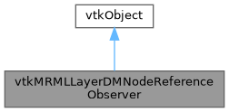

|
Slicer 5.13
Slicer is a multi-platform, free and open source software package for visualization and medical image computing
|
Loading...
Searching...
No Matches
|
Slicer 5.13
Slicer is a multi-platform, free and open source software package for visualization and medical image computing
|
#include <Modules/Loadable/LayerDM/MRML/vtkMRMLLayerDMNodeReferenceObserver.h>


Public Types | |
| enum | Event { ReferenceAddedEvent = 0 , ReferenceRemovedEvent } |
| using | RefT = std::tuple<vtkWeakPointer<vtkMRMLNode>, std::string> |
| typedef vtkObject | Superclass |
Public Member Functions | |
| virtual const char * | GetClassName () |
| virtual int | IsA (const char *type) |
| void | PrintSelf (ostream &os, vtkIndent indent) override |
| void | SetScene (vtkMRMLScene *scene) |
| Setting the MRML scene will trigger node added / removed callbacks if they are set. | |
| std::vector< RefT > | GetNodeToReferences (vtkMRMLNode *node) const |
| std::vector< RefT > | GetNodeFromReferences (vtkMRMLNode *node) const |
| int | GetReferenceToSize () const |
| int | GetReferenceFromSize () const |
| int | GetNumberOfNodes () const |
Static Public Member Functions | |
| static int | IsTypeOf (const char *type) |
| static vtkMRMLLayerDMNodeReferenceObserver * | New () |
| static vtkMRMLLayerDMNodeReferenceObserver * | SafeDownCast (vtkObject *o) |
Protected Member Functions | |
| vtkMRMLLayerDMNodeReferenceObserver () | |
| ~vtkMRMLLayerDMNodeReferenceObserver () override | |
| using | CallBackT = std::function<void(vtkMRMLNode*, vtkMRMLNode*, const std::string&, int eventType)> |
| void | SetReferenceModifiedCallBack (const CallBackT &modifiedCallback) |
Reference node observer. Triggers node ref added / removed when references change in the scene. Allows to appropriately update pipelines when references to a given display node are added / removed.
Definition at line 45 of file vtkMRMLLayerDMNodeReferenceObserver.h.
| using vtkMRMLLayerDMNodeReferenceObserver::CallBackT = std::function<void(vtkMRMLNode*, vtkMRMLNode*, const std::string&, int eventType)> |
Set the callback triggered when a reference from a node to another node with a given role is added / removed. If the callbacks are defined before the scene is set to the object, the callbacks will be triggered for existing nodes in the scene.
Definition at line 89 of file vtkMRMLLayerDMNodeReferenceObserver.h.
| using vtkMRMLLayerDMNodeReferenceObserver::RefT = std::tuple<vtkWeakPointer<vtkMRMLNode>, std::string> |
Reference to a node with a given role.
The node is held by a weak pointer, unlike the other LayerDM containers, because these lists can outlive the node: OnNodeRemoved drops the owning key of the map holding the opposite direction of the reference without notifying the nodes referencing it, so their lists keep the reference until they are updated. Reading such an entry must therefore check the node before using it. The lists are unordered for the same reason: a weak pointer nulls itself in place, which would silently change the value of an element of an ordered container and break its ordering.
Definition at line 59 of file vtkMRMLLayerDMNodeReferenceObserver.h.
| typedef vtkObject vtkMRMLLayerDMNodeReferenceObserver::Superclass |
Definition at line 68 of file vtkMRMLLayerDMNodeReferenceObserver.h.
| Enumerator | |
|---|---|
| ReferenceAddedEvent | |
| ReferenceRemovedEvent | |
Definition at line 61 of file vtkMRMLLayerDMNodeReferenceObserver.h.
|
protected |
|
overrideprotected |
|
virtual |
| std::vector< RefT > vtkMRMLLayerDMNodeReferenceObserver::GetNodeFromReferences | ( | vtkMRMLNode * | node | ) | const |
| std::vector< RefT > vtkMRMLLayerDMNodeReferenceObserver::GetNodeToReferences | ( | vtkMRMLNode * | node | ) | const |
Get references to / from node
| int vtkMRMLLayerDMNodeReferenceObserver::GetNumberOfNodes | ( | ) | const |
| int vtkMRMLLayerDMNodeReferenceObserver::GetReferenceFromSize | ( | ) | const |
| int vtkMRMLLayerDMNodeReferenceObserver::GetReferenceToSize | ( | ) | const |
Returns the number of nodes currently stored in the observer. Used for testing / debugging purposes. Usage in normal context should be unnecessary.
|
virtual |
|
static |
|
static |
|
override |
|
static |
| void vtkMRMLLayerDMNodeReferenceObserver::SetReferenceModifiedCallBack | ( | const CallBackT & | modifiedCallback | ) |
| void vtkMRMLLayerDMNodeReferenceObserver::SetScene | ( | vtkMRMLScene * | scene | ) |
Setting the MRML scene will trigger node added / removed callbacks if they are set.